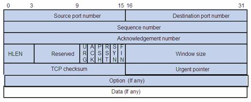

Protokollat
Risto Partanen
Internet-Protokolla
Internet-Protokolla on ehkäpä kaikkein tärkein protokolla, koska kaikki muut protokollat hyödyntävät sitä. IP-protokolla ei luo varsinaista yhteyttä kahden laitteen välillä, joten sitä kutsutaan yhteydettömäksi protokollaksi. Yhteydetön protokolla tarkoittaa, että IP-protokolla ei huolehdi siitä onko paketti varmasti on saapunut pisteestä A pisteeseen B? Tietyissä tilanteissa IP-protokolla "hyödyntää" myös ICMP protokollaa, mutta nämä ovat lähinnä tapauksia joissa IP paketin siirrossa on tapahtunut jokin virhe ja siitä pitää saada tieto lähettäjälle. Lähinnä tiedottamisen tekevät verkossa IP-pakettien kuljetuksesta vastaavat aktiivilaitteet.

Kuvassa näkyy IP-protokollan paketti, jossa tärkeimmät (ohjelmoijan/ohjelman kannalta) kentät ovat "Source IP Address" ja "Destination IP Address".
Kuinka dataa sitten käsitellään IP protokollaa hyödyntäen?
- Sovelluskerroksessa olevalla sovelluksella on jotakin dataa jota se haluaa lähettää eteenpäin. Esimerkiksi vaikka NodeJS socket.write(data)
- Kuljetuskerroksessa tuo lähetettävä data paketoidaan joko käyttämällä TCP-protokollaa tai sitten UDP-protokollaa (jompikumpi)
- Internetkerroksessa DATA + TCP paketoidaan IP-protokollan mukaiseen IP-pakettiin ja lähetetään fyysiselle kerrokselle kuljetettavaksi
- Fyysisessä kerroksessa DATA + TCP + IP paketoidaan fyysisen kerroksen kehykseen (frame) ja kehys liikkuu verkkopiuhoissa eteenpäin.
- Vastaanottavassa päässä kaikki tapahtuu päinvastaisessa järjestyksessä hyödyntäen IP-osoitetta johon data on menossa.
Summary
Käytännössä siis kaikki muut protokollat jotka "keskustelevat" verkon välityksellä tukeutuvat IP-protokollaan! Ohjelmoijalle tärkeää on tietää että mistä koneesta ja mihin koneeseen paketti on menossa, eli mikä on kohdekoneen osoite? Kaikki tämä tieto (lähettävän ja vastaanottavan koneen osoite) on mukana IP-protokollan mukaisessa IP-paketissa, kuten ensimmäisen sivun kuvasta voidaan päätellä. Oikeastaan, tästä tiedosta ohjelmalta ei tule kuin sen kohdekoneen osoite, koska alustakoneen tiedot täytetään pakettia luodessa. Joten ohjelman tarvitsee siis vähintään tietää että mihin IP-osoitteeseen tuo kyseinen datapaketti halutaan lähettää (määritellään koodissa).
TCP-Protokolla
TCP-protokollan tehtävänä on huolehtia että yhteys on varmasti luotettava ja että yksikään siirretty bitti kahden laitteen välillä ei häviä. TCP-protokolla luo yhteyden kahden koneen välille ja on siis yhteydellinen protokolla. Yhteydellisyys tarkoittaa, että TCP-protokolla huolehtii yhteden ensin pystyyn ja huolehtii myös siitä että yhtään bittiä ei häviä yhteyden aikana. Yhteyden muodostaminen tapahtuu hyödyntäen ns. kolmivaiheista kättelyä, josta on kuva alla:
- Client haluaa jutella palvelimen (server) kanssa (SYN-sanoma lähetetään palvelimelle).
- Palvelin kuittaa keskustelunavauksen SYN-ACK -sanomalla ja on valmis luomaan yhteyden omassa päässään.
- Client vastaanottaa SYN-ACK -sanoman ja avaa yhteyden omassa päässä, sekä lähettää ACK -sanoman palvelimelle.
- Palvelin vastaanottaa ACK-sanoman ja avaa yhteyden.
Tärkein ominaisuus TCP-protokollassa on yhteyden luonnin lisäksi, myös pakettien häviämättömyydestä huolehtiminen johon kättely antaa aloituksen.
Datan siirtäminen TCP-protokollalla
Kun sovellus haluaa lähettää dataa hyödyntämällä TCP-protokollaa, määritellään silloin sovelluksessa lähettävä ja vastaanottava portti. Toisin kuin IP-protokollassa, TCP-protkollassa ei siis määritetä kohdekoneen tai lähettävän koneen IP-osoitetta, vaan nyt käytetään portteja. Kohdekoneen ja lähettävän koneen IP-osoitteista huolehtiminen jää IP-protokollalle, jonka sisälle TCP-protokollan paketti laitetaan. Alla on kuva TCP-Protokollan paketista:
Pakettien järjestys on siis, kun sovellus haluaa lähettää dataa:
- Sovelluksen DATA laitetaan TCP-protokollan pakettiin.
- TCP-pakettiin määritellään lähdekoneen porttinumero + kohdekoneen porttinumero.
- TCP-paketti jossa on DATA + lähdekoneen porttinumero + kohdekoneen porttinumero laitetaan IP-pakettiin.
- IP-paketti laitetaan verkkoon ns. ethernet kehyksessä (frame).
- Vastaanottavassa päässä kaikki tapahtuu päinvastaisessa järjestyksessä hyödyntäen porttinumeroa johon DATA on menossa.
Summary
Tässä meillä on IP-protokollan jälkeen yksi tärkeimmistä protokollista, kun puhutaan tiedon siirtämisestä verkon yli. Yhdessä IP-protokollan kanssa nämä kaksi protokollaa tuottavat TCP/IP protokollaperheen, joita melkein kaikki muut protokollat hyödyntävät. Yhdessä nämä 2 protokollaa (TCP ja IP) siis huolehtivat siitä että data matkaa verkossa kahden koneen välillä käyttäen IPv4 tai IPv 6 osoitteita ja että data saavuttaa kohdekoneessa sen portin johon sen oletetaan saapuvan. Myös NodeJS hyödyntää näitä kahta protokollaa, silloin kun luodaan palvelu ja otetaan palveluun yhteys käyttäen HTTP-protokollaa.